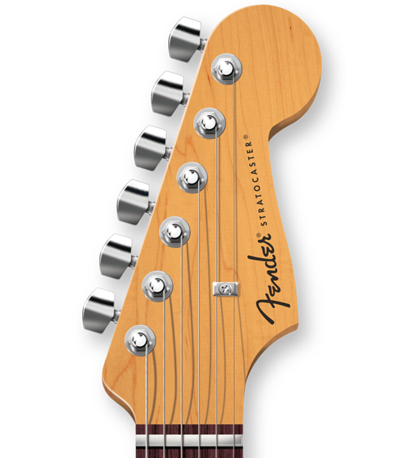
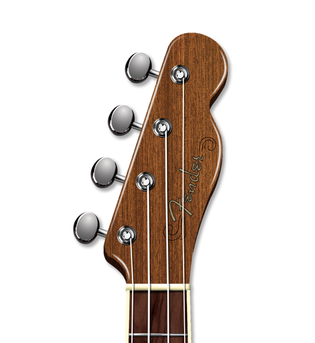
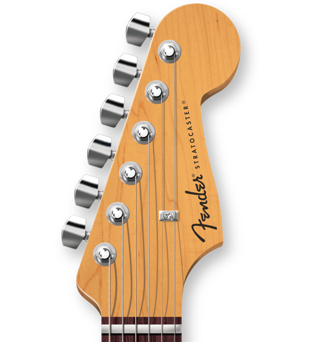
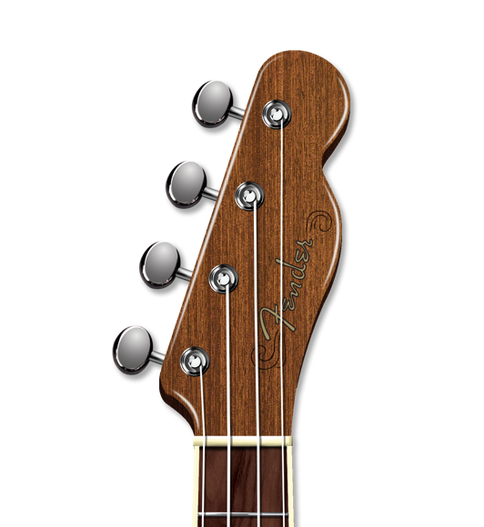

GUITAR TUNER
Tune your acoustic, electric, bass guitar and ukulele
Pick an instrument and start tuning right away. Choose from 22 tuning options.
 



TUNING TIP: GET FLAT TO GET SHARP
A simple but crucial tip to make sure you're tuned up right.
Whether you're playing the acoustic or electric guitar, you need to be in tune. But how do you know if you're tuning correctly? Of course, you can use the Fender Tune app or a digital tuner, but the way you turn the tuning pegs as you tune matters. "When ths string you're tuning is sharp, loosen it until it's a little flat and then tighten it up to pitch," said Fender Play instructor Matt Lake. Find out why you want to do this in the helpful video above, and if you're not a member of Fender Play yet, click here for a free trial